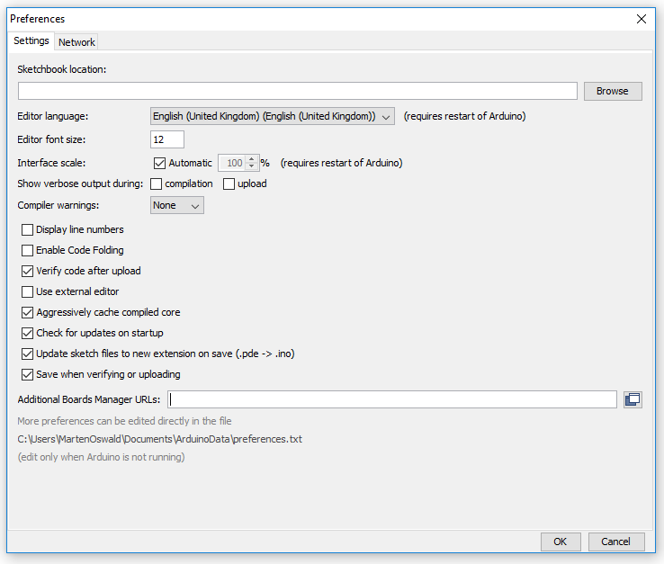
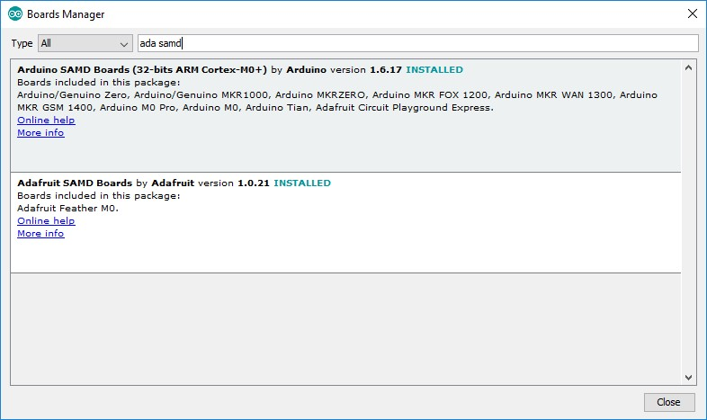

Installation
To install this library, if you didn't get it from the Arduino Library Manager, just place this entire folder as a subfolder in your Arduino/libraries folder.
When installed, this library should look like:
- Arduino/libraries/dt-cot-arduino-library (this file's folder)
- Arduino/libraries/dt-cot-arduino-library/mainpage.md (this file)
- Arduino/libraries/dt-cot-arduino-library/src (sources of the CoT library)
- Arduino/libraries/dt-cot-arduino-library/examples (example reference implementations)
Arduino Basic Setup
To be able to compile the Cloud of Things library and the related examples the following components must be added to Arduino.
Menu: File -> Preferences:

- Find the option "Additional Boards Manager URL" and put the following in the related text box:

Menu: Tools -> Board -> Boards Manager...:
Install the following board support libraries...
- Arduino SAMD Boards
- Adafruit SAMD Boards
- ESP8266
- Tuino AVR Boards

Menu: Sketch -> Include Library -> Manage Libraries...:
- WiFi101
- Adafruit MQTT Library